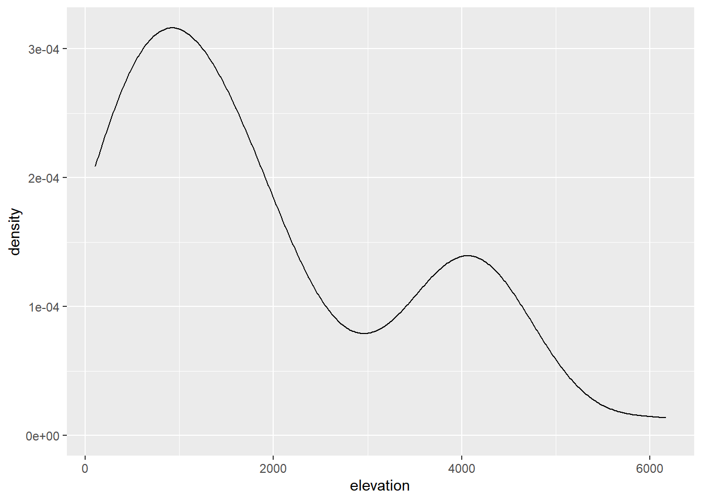
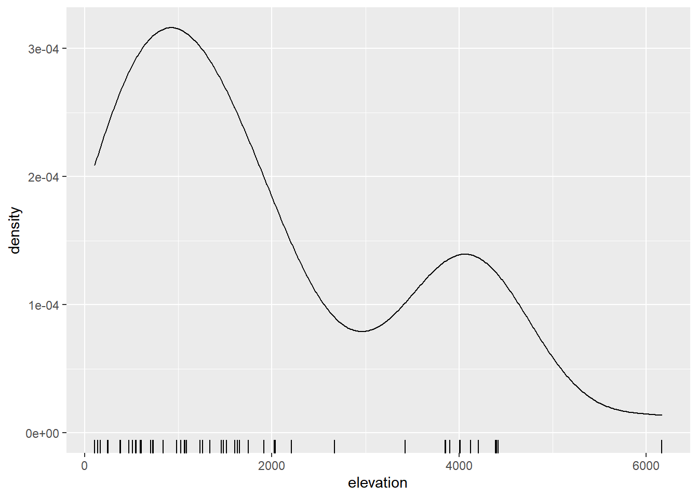

Topic 3 What is Exploratory Data Analysis?
3.1 A first example
A first example: Heights of the highest points by state
# data-read
## load required packages and data
library(tidyverse)
#> -- Attaching packages --------------------------------------- tidyverse 1.3.0 --
#> v ggplot2 3.3.3 v purrr 0.3.4
#> v tibble 3.0.4 v dplyr 1.0.2
#> v tidyr 1.1.2 v stringr 1.4.0
#> v readr 1.4.0 v forcats 0.5.0
#> -- Conflicts ------------------------------------------ tidyverse_conflicts() --
#> x dplyr::filter() masks stats::filter()
#> x dplyr::lag() masks stats::lag()
options(tibble.print_min = 15)
heights = read_csv("data/highest-points-by-state.csv")
#>
#> -- Column specification --------------------------------------------------------
#> cols(
#> elevation = col_double(),
#> state = col_character()
#> )
## switch from feet to meters
heights$elevation = heights$elevation * .3048
## data-print
heights
#> # A tibble: 50 x 2
#> elevation state
#> <dbl> <chr>
#> 1 733. Alabama
#> 2 6168. Alaska
#> 3 3851. Arizona
#> 4 839. Arkansas
#> 5 4418. California
#> 6 4399. Colorado
#> 7 725. Connecticut
#> 8 137. Delaware
#> 9 105. Florida
#> 10 1458. Georgia
#> 11 4205. Hawaii
#> 12 3859. Idaho
#> 13 376. Illinois
#> 14 383. Indiana
#> 15 509. Iowa
#> # ... with 35 more rows
## data-arrange-ascending
arrange(heights, elevation)
#> # A tibble: 50 x 2
#> elevation state
#> <dbl> <chr>
#> 1 105. Florida
#> 2 137. Delaware
#> 3 163. Louisiana
#> 4 246. Mississippi
#> 5 247. Rhode Island
#> 6 376. Illinois
#> 7 383. Indiana
#> 8 472. Ohio
#> 9 509. Iowa
#> 10 540. Missouri
#> 11 550. New Jersey
#> 12 595. Wisconsin
#> 13 603. Michigan
#> 14 701. Minnesota
#> 15 725. Connecticut
#> # ... with 35 more rows
## data-arrange-descending
arrange(heights, desc(elevation))
#> # A tibble: 50 x 2
#> elevation state
#> <dbl> <chr>
#> 1 6168. Alaska
#> 2 4418. California
#> 3 4399. Colorado
#> 4 4392. Washington
#> 5 4207. Wyoming
#> 6 4205. Hawaii
#> 7 4123. Utah
#> 8 4011. New Mexico
#> 9 4005. Nevada
#> 10 3901. Montana
#> 11 3859. Idaho
#> 12 3851. Arizona
#> 13 3426. Oregon
#> 14 2667. Texas
#> 15 2207. South Dakota
#> # ... with 35 more rows
## stem-and-leaf
stem(heights$elevation)
#>
#> The decimal point is 3 digit(s) to the right of the |
#>
#> 0 | 11222445555667778
#> 1 | 0011123355566779
#> 2 | 0027
#> 3 | 4999
#> 4 | 00122444
#> 5 |
#> 6 | 2
## density-estimate
ggplot(heights, aes(x = elevation)) + geom_density()
## density-estimate-plus-rug
ggplot(heights, aes(x = elevation)) + geom_density() + geom_rug()